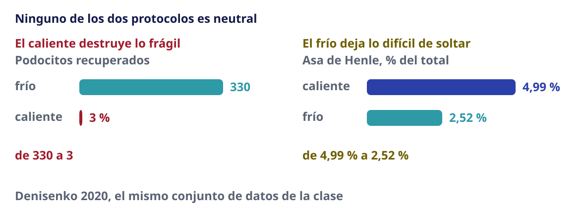

Sesión 05 · Martes 1 de septiembre de 2026
Control de calidad: del experimento a los datos
Bioinformática y Estadística 3 · Licenciatura en Ciencias Genómicas
ENES Juriquilla, UNAM · Semestre 2027-1
Luis Alberto Meza Cova
José Antonio Ovando Ricárdez
Laboratorio de Biología Computacional · INER

Antes de empezar
Objetivo de la sesión
Reconocer que la calidad de un experimento de célula única se decide en el laboratorio y no en el análisis; identificar qué decisión experimental produce cada artefacto observable en los datos; y aplicar los criterios bioinformáticos que permiten detectarlos, decidiendo con criterio explícito y defendible qué células se descartan.
El caso que abre la sesión
![Cuatro fichas en fila, una por publicación, con su año, sus autores y su revista. Dos mil diecisiete, van den Brink, Nature Methods: la disociación enciende genes de estrés. Dos mil diecisiete, Adam y Potter, Development: en frío casi no pasa, de treinta y siete mil quinientos cuarenta a noventa y seis. Dos mil diecinueve, O'Flanagan, Genome Biology: quinientos doce genes, y también en tumor humano. Dos mil veinte, Denisenko, Genome Biology: riñón de ratón, que es el conjunto de datos de hoy. Debajo, que se ha publicado más de una vez como un estado celular nuevo y que no lo es, y en rojo, que no se quita filtrando porque esas células están vivas y sus métricas son buenas.](assets/images/caso-apertura-sesion-05.svg)
Desarrollo
Seis genes que se encienden en diez minutos
![Los seis genes de la firma de estrés, repartidos en dos familias. A la izquierda, en azul, los cuatro de respuesta temprana inmediata, que son factores de transcripción: Fos, Jun, Junb y Egr1. A la derecha, en oro, los dos de choque térmico, que son chaperonas: Hspa1a y Hsp90aa1. Debajo, en rojo, que se encienden ante cualquier estímulo y en diez minutos, y que por eso una lesión real y una pipeta escriben el mismo texto. Al pie, las fuentes: Kruijer 1984 para los diez minutos y Denisenko 2020 para las dos familias.](assets/images/firma-seis-genes.svg)
Los diez minutos de c-fos: Kruijer et al. (1984) · las dos familias: Denisenko et al. (2020)
Y un grupo del riñón los tiene todos altos
- Un grupo de 442 células, en un riñón de ratón con 23 025 células
- Puntuación media de la firma: 1,088
- Es la más alta de los 16 grupos del análisis
- Las células están vivas y sus métricas son buenas
¿Un estado celular, o el protocolo?
Un grupo reproducible, con la firma más alta del tejido y células vivas.
¿Es un estado celular activado, digno de una figura?
¿O es el rastro de lo que le hicimos al tejido para poder medirlo?
Por qué no se puede contestar mirando la firma
- La disociación induce estos genes
- Una lesión real del tejido induce los mismos
- La manipulación y la biología escriben el mismo texto
La disociación induce los mismos genes que una lesión: Brink et al. (2017)
La cadena: del banco de trabajo a la matriz
Cada decisión del laboratorio deja una huella medible en los datos.
| Decisión en el laboratorio | Artefacto en la matriz | Con qué se detecta |
|---|---|---|
| Tiempo de isquemia largo | muerte celular, mitocondrial alta | proporción mitocondrial por célula |
| Almacenamiento antes de procesar | pérdida de poblaciones frágiles | composición que no cuadra con el tejido |
| Disociación enzimática a 37 °C | firma de estrés: FOS, JUN, EGR1, HSP | puntuación de la firma |
| Células íntegras en tejido fibroso | faltan tipos celulares enteros | contraste con la histología |
| Baja viabilidad al cargar | mucho RNA ambiental, cuentas bajas | fracción de gotas vacías |
| Sobrecarga del canal | dobletes | tasa esperada por número de células |
Cadena completa de sesgos por disociación y almacenamiento: Denisenko et al. (2020)
Dos maneras de deshacer un tejido
![Esquema publicado de los dos protocolos de disociación, recortado a sus dos primeros paneles. Arriba, en rojo, un riñón que pasa por disociación a treinta y siete grados y da lugar a secuenciación de célula única y masiva. Abajo, en azul, el mismo riñón con disociación en frío y las mismas salidas. Al lado se explica que a treinta y siete grados la célula sigue viva y reaccionando mientras se manipula, y que en frío la transcripción está casi parada y congela el patrón de dentro. Al pie, la atribución: Denisenko y colaboradores 2020, Genome Biology veintiuno, ciento treinta, figura uno, paneles A y B, con licencia CC BY 4.0, recortada.](assets/images/articulo-diseno-denisenko.svg)
Figura adaptada de Denisenko et al. (2020), CC BY 4.0
Lo que el calor enciende
![Seis genes ordenados por cuánto más se expresan cuando el tejido se disocia en caliente frente a en frío, en escala logarítmica. Fos encabeza con cincuenta y cuatro veces, seguido de Hspa1a con dieciocho, Egr1 con catorce, Jun con cinco coma seis, Junb con cuatro coma dos y Hsp90aa1 con solo una coma tres. Los de respuesta temprana van en azul y los de choque térmico en oro, y se ve que las dos familias se mezclan en el orden. Al pie, que los datos son de GSE141115, riñón de ratón, seis muestras.](assets/images/estres-caliente-vs-frio.svg)
Reanálisis propio sobre Denisenko et al. (2020)
No es riñón, no es ratón, y salen los mismos genes
![Gráfico de barras publicado, recortado a los doce primeros genes de cuarenta, con una ruptura marcada en el eje y la escala conservada abajo. Los genes van ordenados por el logaritmo del cambio entre treinta y siete grados y seis grados: FOS encabeza la lista, seguido de CXCL2, ZFP36, FOSB, DUSP1, ATF3, CXCL8, NR4A1, CXCL3, PPP1R15A, JUNB y EGR1. Al lado se explica que son veintitrés mil setecientas treinta y una células de xenoinjertos de mama, con colagenasa a treinta y siete grados frente a proteasa fría a seis, y que aunque no es riñón, ni ratón, ni la misma enzima, salen los mismos genes. Al pie, la atribución: O'Flanagan y colaboradores 2019, Genome Biology veinte, doscientos diez, figura tres a, con licencia CC BY 4.0.](assets/images/articulo-genes-oflanagan.svg)
O’Flanagan et al. (2019)
96 contra 37 540
En riñón de ratón, expresión de Fos:
| Protocolo | Expresión de Fos |
|---|---|
| Proteasa activa en frío | 96 |
| 15 min a 37 °C | 37 540 |
| 30 min a 37 °C | 71 082 |
| 60 min a 37 °C | 34 786 |
Adam et al. (2017)
Quince minutos ya bastan
![Una curva sobre un eje de tiempo de digestión con marcas en cero, quince, sesenta y ciento veinte minutos. El eje vertical es la expresión media del grupo de genes tempranos. La curva ya está alta a los quince minutos, hace pico a los sesenta y a las dos horas vuelve casi al punto de partida. Debajo se explica que cuarenta y dos genes suben ya a los quince minutos y que a las dos horas son más de tres mil, pero que para entonces la firma ya bajó. Al pie, que los datos son de Machado 2021 en músculo de ratón y que en riñón no hay curva publicada.](assets/images/duracion-digestion.svg)
Curva de tiempo en músculo de ratón: Machado et al. (2021)
La enzima pesa aparte del tiempo
![Gráfico publicado de expresión media del conjunto de genes de estrés frente al tiempo de digestión, de treinta minutos a tres horas, con una línea por gen y el color según la enzima. Las líneas rojas, de colagenasa a treinta y siete grados, suben de forma sostenida durante las tres horas. Las líneas azules, de proteasa fría a seis grados, se quedan planas. Al lado se explica que la colagenasa sube y no se detiene, que la proteasa fría se mantiene plana todo el tiempo, y que a los treinta minutos, con el mismo tiempo de digestión, ya difieren trescientos seis de los quinientos doce genes. Al pie, la atribución: O'Flanagan y colaboradores 2019, Genome Biology veinte, doscientos diez, figura cuatro a, con licencia CC BY 4.0, solo el panel A.](assets/images/articulo-tiempo-enzima.svg)
O’Flanagan et al. (2019)
Ninguno de los dos sale gratis

Denisenko et al. (2020)
De dónde salió el 5 %
![Tres pasos encadenados. Primero, en dos mil once, Mercer y colaboradores publican RNA-seq masivo de dieciséis tejidos y describen que las mitocondrias aportan un límite inferior de alrededor del cinco por ciento en tejidos de poca demanda energética. Después, los tutoriales escriben la línea percent punto mt menor que cinco, sin ninguna justificación al lado. Hoy, la costumbre descarta células por pasar del cinco por ciento, convertido en un techo para filtrar. Abajo, en rojo, que un piso descriptivo de tejido sano se convirtió en un techo para descartar células, y que el artículo de Mercer no menciona control de calidad ni una sola vez.](assets/images/origen-del-5-por-ciento.svg)
Mercer et al. (2011) · la reconstrucción: Osorio & Cai (2021)
Y el artículo al que se culpa dice lo contrario
«Elegir valores de corte solo captura una parte del paisaje de células de baja calidad.»
- Ilicic 2016 no propone el 5 %: propone un clasificador con más de 20 rasgos
- Sí aporta el mecanismo: si la membrana se rompe, el ARN del citoplasma se pierde y el de la mitocondria se queda
- Y el 5 % no es el valor por defecto de Seurat: está en el tutorial, no en el código
Ilicic et al. (2016)
Qué pasa si lo aplicas a este riñón
![Siete líneas, una por muestra y una global, sobre un eje de contenido mitocondrial de cero a cien por ciento. En cada línea, un punto azul marca la mediana de la muestra, entre veinticuatro y treinta y seis por ciento, y un punto dorado marca el corte calculado por desviación absoluta mediana, entre setenta y uno y setenta y seis. Una banda roja estrecha a la izquierda marca el umbral fijo del cinco por ciento del tutorial, que queda muy por debajo de todas las medianas. A la derecha, el porcentaje de células que ese umbral fijo eliminaría en cada muestra: entre noventa y ocho y cien por ciento, y noventa y nueve coma cinco en el conjunto.](assets/images/umbral-fijo-vs-mad.svg)
Reanálisis propio sobre Denisenko et al. (2020)
El MAD: una mediana de desviaciones
![Una recta numérica con la serie uno, tres, tres, seis, ocho, diez, diez y mil. Los siete primeros valores se agrupan a la izquierda, en azul, y el mil queda muy lejos a la derecha, en rojo, tras una ruptura del eje. Encima, una banda gris ancha marca el criterio de tres desviaciones típicas, que va de menos ochocientos cincuenta y seis a mil ciento diecisiete y por tanto no detecta el mil. Debajo, una banda verde estrecha marca el criterio de tres desviaciones absolutas medianas, que va de menos ocho coma seis a veintidós coma seis y sí lo detecta. Al pie, que el ejemplo es de Leys 2013, con media ciento treinta coma uno y desviación típica trescientos veintiocho coma ocho, frente a mediana siete y desviación absoluta mediana escalada cinco coma diecinueve.](assets/images/mad-contra-extremo.svg)
Leys et al. (2013)
Por lote, y no de forma global
![Dos campanas sobre un eje de cuentas por célula, de cero a seis mil. La de la izquierda, en turquesa, es el lote B, de poca cobertura, centrada en mil. La de la derecha, en azul, es el lote A, de buena cobertura, centrada en cinco mil. Entre las dos hay un valle vacío, y ahí es justo donde cae la mediana global, marcada con una línea roja discontinua en mil quinientos, lejos de todas las células. Dos marcas verdes señalan el umbral propio de cada lote, en quinientos cincuenta y cinco y en cuatro mil sesenta. Una flecha roja sale del eje hacia la izquierda indicando que el umbral global vale menos dos mil doscientos ochenta y uno y ni siquiera cabe en el gráfico. Al pie, que el umbral global no descarta ni una sola célula mientras que por lote se descartan las cuatro malas, y que es un ejemplo con cifras redondas.](assets/images/umbral-por-lote.svg)
Pero el MAD tampoco es magia
- Por construcción, no puede descartar a la mayoría
- Si el lote entero falló, su propia MAD lo declara normal
- Páncreas humano de Grün: un umbral calculado de 113,1 % — imposible
Amezquita et al. (2020)
Cuatro técnicas, con el guion ya escrito
Ejecutas e interpretas. No tecleas desde cero: el guion en Quarto ya está escrito. Poco más de 6 minutos por técnica.
| Qué se calcula | Qué se mira | |
|---|---|---|
| 1 | Métricas por célula | cuentas, genes, % mitocondrial, ribosomal, hemoglobina |
| 2 | Umbrales adaptativos por MAD | cuántas células caen de cada lado |
| 3 | Puntuación de la firma de estrés | ¿atraviesa poblaciones o se concentra en una? |
| 4 | Dobletes con scDblFinder |
¿coincide con la tasa esperada por carga? |
Nota
El equivalente en Python se muestra precalculado. Hoy no se instala nada.
Detección de dobletes: Germain et al. (2021)
A cada equipo, un criterio distinto
El mismo conjunto de datos, cuatro criterios de filtrado.
| Criterio | Qué pone a prueba | |
|---|---|---|
| A | Fijo de tutorial: mito < 5 %, > 200 genes | el punto de partida más frecuente |
| B | Adaptativo por MAD, global | mejora sobre el fijo… ¿a qué costo? |
| C | Adaptativo por MAD, por lote | la opción defendible |
| D | Sin filtrar por mitocondrial | cuántas células se recuperan, y a cambio de qué |
Cada equipo publica en el tablero: su gráfica de métricas y cuántas células perdió.
Importante
El entregable es el reporte, no la tabla. Lo que se revisa es por qué ese umbral y no otro.
No cuántas células, sino cuáles
La pregunta de la plenaria
- El criterio A perdió más células que el C. Eso no lo hace peor
- La pregunta es qué poblaciones desapareció cada uno
- Una población que se pierde con un criterio y sobrevive con otro es la prueba
Y el grupo del principio
Aquellas células con FOS, JUN y HSPA1A:
- Sobreviven a los cuatro criterios de filtrado
- No es un problema de filtrado: es la disociación
- Están vivas, tienen buenas métricas y no hay umbral que las separe
Importante
No se arregla filtrando. Se previene en el laboratorio, con proteasa activa en frío, y se detecta puntuando la firma antes de anotar cualquier grupo.
El artefacto descrito: Brink et al. (2017) · La prevención en el laboratorio: O’Flanagan et al. (2019)
Errores comunes
Interpretar la firma de disociación como biología
| Cómo se detecta | Un grupo definido por FOS, JUN, EGR1 y proteínas de choque térmico, presente en varias poblaciones |
| Cómo se resuelve | Puntuar la firma de estrés antes de anotar. Si atraviesa poblaciones, es técnica. Se prevé con disociación en frío; en el análisis se anota y se decide si se excluye o se modela. |
Copiar los umbrales de un tutorial
| Cómo se detecta | Se pierden poblaciones celulares legítimas sin ningún aviso |
| Cómo se resuelve | Los umbrales se derivan de la distribución de los propios datos. Umbrales adaptativos por desviación absoluta mediana. |
Calcular umbrales de forma global cuando hay varios lotes
| Cómo se detecta | El lote con menor profundidad se elimina casi entero |
| Cómo se resuelve | Calcular por lote. Requiere que los metadatos de lote existan, que es lo que se decidió el 20 de agosto. |
Interpretar todo porcentaje mitocondrial alto como daño
| Cómo se detecta | Se descartan tipos celulares metabólicamente activos |
| Cómo se resuelve | Contrastar contra el tipo celular esperado. Si la población perdida es coherente entre réplicas, probablemente es biología. |
Usar células íntegras en tejido fibrótico o congelado
| Cómo se detecta | Faltan poblaciones esperadas; las proporciones no cuadran con la histología |
| Cómo se resuelve | Núcleos aislados. El sesgo de composición no se detecta con métricas por célula: solo se ve comparando con lo que se sabe del tejido. |
Filtrar dobletes sin considerar la tasa esperada
| Cómo se detecta | Se eliminan células reales, o quedan dobletes que aparecen como un tipo celular nuevo |
| Cómo se resuelve | La tasa esperada depende del número de células cargadas y la indica la plataforma. Se usa como referencia, no como verdad. |
Hacer el control de calidad una sola vez y no volver a mirar
| Cómo se detecta | Los problemas aparecen después, al agrupar, y se atribuyen a biología |
| Cómo se resuelve | El control de calidad se revisita después de agrupar. Un grupo con métricas raras suele ser un artefacto. |
Cierre
Qué se llevan de hoy
- La calidad de un experimento se decide en el laboratorio, no en el análisis
- Cada artefacto de la matriz apunta a una decisión concreta del banco de trabajo
- Los umbrales se derivan de estos datos, y por lote
- Hay artefactos que ningún filtro corrige: se previenen o se declaran
El jueves 3: la práctica integradora
- Hoy se filtró con un criterio asignado. El jueves lo eligen ustedes
- Y arranca el proyecto del módulo, que se entrega en video el 25 de septiembre
- Su criterio de filtrado de hoy es la primera decisión que van a tener que defender
Nota
El reporte en Quarto con el criterio justificado es lo que se revisa. No la tabla.
Para leer
- El artefacto de disociación, descrito: Brink et al. (2017)
- Cómo se previene en el laboratorio: O’Flanagan et al. (2019)
- Sesgos de disociación y almacenamiento, sistemáticos: Denisenko et al. (2020)
- Umbrales adaptativos y métricas por célula: McCarthy et al. (2017)
- Clasificación de células de baja calidad: Ilicic et al. (2016)
- Dobletes: Germain et al. (2021)
- Panorama del flujo y sus decisiones: Luecken & Theis (2019)
Referencias completas (1/2)
Referencias completas (2/2)
Análisis de single-cell RNA-seq · Bioinformática y Estadística 3 · LCG, ENES Juriquilla UNAM · 2027-1